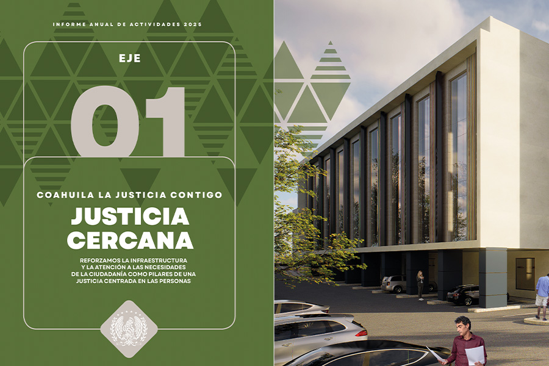
Eje 1 Justicia Cercana
REFORZAMOS LA INFRAESTRUCTURA Y LA ATENCIÓN A LAS NECESIDADES DE LA CIUDADANÍA COMO PILARES DE UNA JUSTICIA CENTRADA EN LAS PERSONAS
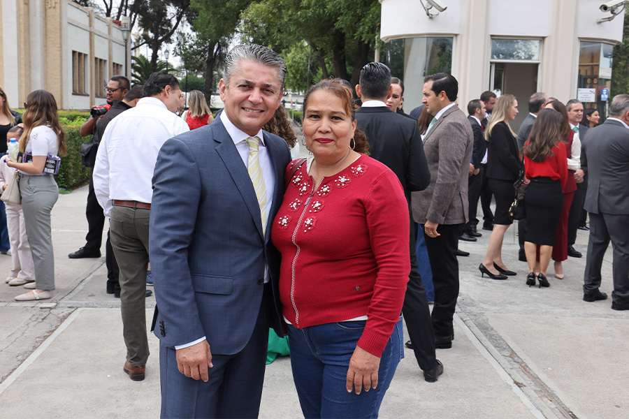
Uno de los principales ejes rectores de nuestro modelo judicial es la cercanía con las y los justiciables. En un contexto donde las instituciones pueden parecer distantes e inaccesibles, en el Poder Judicial de Coahuila trabajamos para reconocer a las personas como titulares de derechos, con necesidades y realidades diversas.
La justicia debe responder con empatía, comprensión y un trato digno, por esa razón, hemos impulsado estrategias que fortalezcan el aspecto humano en cada interacción, en el que cada persona que acuda al sistema judicial encuentre no solo una resolución legal, sino también un acompañamiento institucional adecuado a cada condición y situación.
Bajo esa lógica, este año reforzamos nuestras acciones para acercar más la justicia a la ciudadanía, especialmente en sitios alejados de zonas metropolitanas. Trabajamos en coordinación con el programa Mejora Coahuila, impulsado por el Poder Ejecutivo, para participar en brigadas en las que, a través del Instituto Estatal de Defensoría Pública, ofrecimos acompañamiento, información y asesoría en servicios y trámites, brindando igualdad de oportunidades y acceso a la justicia sin distinción alguna.
Durante este año, asistimos a brigadas en las diferentes regiones del estado, acercando orientación jurídica gratuita y garantizando el respeto a los derechos humanos de las personas que enfrentan situaciones legales y/o de vulnerabilidad.
La atención cercana y oportuna desde el primer contacto con las personas usuarias, se ha convertido en uno de los ejes centrales del Modelo de Justicia de Coahuila. A partir de este enfoque, a través del Centro de Medios Alternos de Solución de Controversias, buscamos priorizar los acuerdos, garantizando que cada persona que se acerque a nosotros tenga primero la posibilidad de construir un convenio con la persona con quien tenga un conflicto, para evitar llegar a los juzgados.
El seguimiento de los asuntos se hace desde una visión de justicia restaurativa que coloca a las personas en el centro de la respuesta judicial y busca atender las causas y consecuencias de los conflictos.
Una de las más importantes líneas de trabajo es nuestra causa en favor de las mujeres, y la construcción de entornos seguros, justos y libres de violencia.
En este contexto, los Juzgados Especializados en Violencia Familiar contra la Mujer representan un avance sustantivo en la protección de los derechos y la seguridad de las mujeres y sus familias. A estos esfuerzos se suman herramientas como el Registro Estatal de Personas Sancionadas por Violencia, que refuerzan las acciones de prevención, fortalecen la transparencia y contribuyen a erradicar conductas que vulneran la integridad y la dignidad de las personas.
Asimismo, consolidamos acciones estratégicas para garantizar el acceso efectivo a la justicia de niñas, niños, adolescentes y sus familias, colocando el interés superior de la niñez como prioridad en nuestra labor jurisdiccional.
Afianzamos el Registro de Deudores Alimentarios Morosos, una herramienta que busca garantizar el derecho a la alimentación y la subsistencia de la niñez, al tiempo que fortalece la justicia con un claro enfoque de derechos.
Buscamos fortalecer las decisiones judiciales considerando todos los elementos de los contextos familiares y sociales, de modo que favorezcan relaciones adecuadas aún en entornos de conflicto a través del Centro de Evaluación Psicosocial priorizando el bienestar de la niñez.
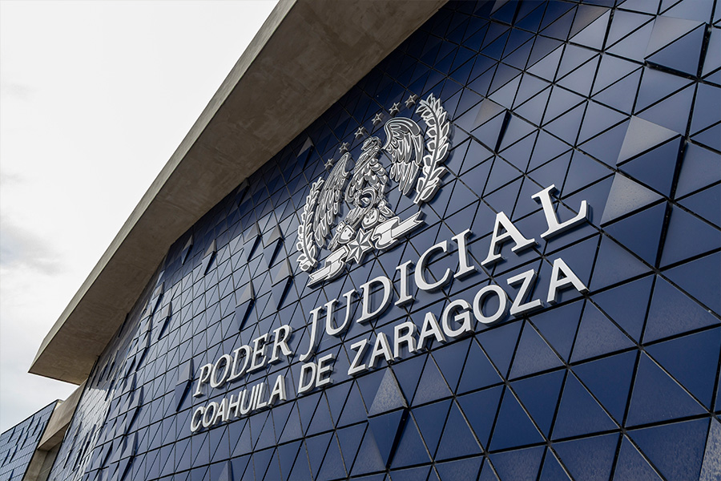
En Saltillo, capital de nuestro estado, hemos materializado el Modelo de Justicia en un espacio físico construido para ser cercanos, eficientes, profesionales, innovadores, transparentes y abiertos: La Ciudad Judicial.
Finalmente, en este apartado, informamos sobre los trabajos de mantenimiento, provisión de mobiliario, medidas de seguridad, entre otras, que se realizaron en el 2025, con el propósito de fortalecer la infraestructura y las condiciones de servicio en beneficio de la ciudadanía y del personal que labora en el Poder Judicial.
Centro de Medios Alternos de Solución de Controversias
El Centro de Medios Alternos de Solución de Controversias (CEMASC) se consolida como el órgano del Poder Judicial facultado para operar y promover los medios alternos en la entidad. Durante 2025, nuestro centro cumplió veinte años de procurar la solución extrajudicial de conflictos y prevenir su incremento, impulsando activamente una cultura de paz y confianza.
Tabla 3. Servicios prestados por el Centro de Medios Alternos de Solución de Controversias
| Actividad | 2025 |
|---|---|
| Número de personas entrevistadas para la exploración del conflicto | 10,115 |
| Invitaciones enviadas a efecto de acercar a las partes | 14,985 |
| Asuntos resueltos con invitación | 144 |
| Procedimientos iniciados por voluntad de las partes | 3,252 |
| Procedimientos concluidos con acuerdo | 1,519 |
| Procedimientos con reapertura | 14 |
| Acuerdos que las partes manifiestan evitaron juicios | 1,530 |
Fuente: Centro de Medios Alternos de Solución de Controversias. Poder Judicial del Estado de Coahuila de Zaragoza. 2025.
A través del CEMASC, buscamos el acercamiento voluntario y efectivo de las partes para que, mediante el diálogo y la comunicación efectiva, logren resolver sus controversias de forma rápida y efectiva, que a diferencia de los litigios judiciales, que suelen ser procesos largos, complejos y agotadores para todos, las soluciones alternativas evitan demoras en la administración de justicia.
Para ello, contamos con la asistencia de personas facilitadoras debidamente capacitadas y certificadas que orientan a las y los usuarios en la toma de acuerdos equilibrados, justos y acordes a la necesidad de cada situación. En el periodo que se informa, ofrecimos orientación y realizamos 10 mil 115 entrevistas para la exploración del conflicto, extendimos 14 mil 985 invitaciones para acercar a las partes involucradas, iniciamos tres mil 252 procedimientos por voluntad de las partes, y concluimos mil 519 con acuerdos firmes. Destaca en este ámbito que logramos que mil 530 asuntos se resolvieran con métodos de justicia alternativa. Asimismo, a través de la difusión de los métodos alternativos, 144 asuntos se resolvieron con la sola invitación, y se registraron 14 procedimientos con reapertura.
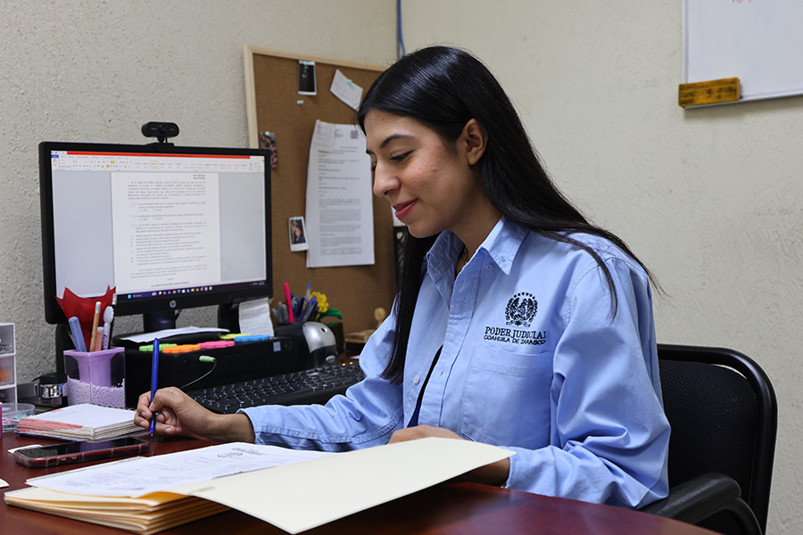
Expedientes de mecanismos alternativos iniciados por materia
Todas las personas enfrentan conflictos en el transcurso de su vida. Si bien en la mayoría de los casos estos pueden resolverse de manera directa, existen situaciones en las que resulta necesaria la intervención de un profesional que actúe de manera imparcial y esté debidamente capacitado, quien facilite la construcción de soluciones satisfactorias a través del diálogo cordial, respetuoso y colaborativo.
Las personas mediadoras, conciliadoras y facilitadoras del Centro de Medios Alternos de Solución de Controversias, intervienen para guiar a las partes durante el diálogo, asegurándose que todas las personas participantes intervengan activamente, se tomen en cuenta sus intereses y necesidades y puedan manejar sus conflictos de una manera efectiva, promoviendo la comprensión, pluralidad, tolerancia, cooperación y participación.
En concordancia con lo anterior, la apertura de expedientes cumple una función que va mucho más allá del trámite administrativo. Cada registro se convierte en una señal clara de cómo la justicia alternativa va abriéndose paso y ganando espacio en la vida social. A través de estos datos, es posible medir no solo su funcionamiento, sino también el grado de confianza y aceptación que despiertan estos modelos menos confrontativos. En ese ejercicio se refleja, además, la voluntad del Poder Judicial de impulsar una justicia más cercana, participativa y sensible a las necesidades de las personas.
En 2025, se iniciaron un total de dos mil 893 expedientes de mecanismos alternativos.
Tabla 4. Expedientes de mecanismos alternativos iniciados por materia
| Delegación | Familiar | Civil | Mercantil | Penal | Total |
|---|---|---|---|---|---|
| Acuña | 28 | 75 | 29 | 7 | 139 |
| Monclova | 241 | 146 | 51 | 42 | 480 |
| Piedras Negras | 61 | 52 | 11 | 17 | 141 |
| Sabinas | 82 | 46 | 14 | 17 | 159 |
| Saltillo Centro | 797 | 249 | 56 | 0 | 1,102 |
| Saltillo Penal | 11 | 10 | 1 | 159 | 181 |
| Saltillo Sur | 98 | 46 | 141 | 0 | 285 |
| San Pedro | 33 | 67 | 15 | 0 | 115 |
| Torreón | 86 | 141 | 63 | 1 | 291 |
| Total | 1,437 | 832 | 381 | 243 | 2,893 |
Fuente: Centro de Medios Alternos de Solución de Controversias. Poder Judicial del Estado de Coahuila de Zaragoza. 2025.
Asuntos derivados a mediación por órganos jurisdiccionales
Destaca que, a lo largo de 2025, en cuanto a los casos derivados de los juzgados, gestionamos un total de 288 expedientes en diversas materias, y de estos, 104 fueron acordados y formalizados por escrito.
Tabla 5. Expedientes de mecanismos alternativos derivados del juzgado
| Delegación | Expedientes judiciales | Familiar | Civil | Mercantil | Penal | Acuerdo escrito | Acuerdo verbal | Otra causa |
|---|---|---|---|---|---|---|---|---|
| Acuña | 9 | 1 | 0 | 1 | 7 | 2 | 0 | 7 |
| Monclova | 53 | 17 | 0 | 0 | 36 | 16 | 1 | 36 |
| Piedras Negras | 19 | 2 | 0 | 0 | 17 | 9 | 0 | 10 |
| Sabinas | 17 | 0 | 0 | 0 | 17 | 5 | 0 | 12 |
| Saltillo Centro | 15 | 15 | 0 | 0 | 0 | 7 | 0 | 8 |
| Saltillo Penal | 160 | 1 | 1 | 0 | 158 | 58 | 0 | 102 |
| Saltillo Sur | 11 | 11 | 0 | 0 | 0 | 4 | 0 | 7 |
| San Pedro | 1 | 1 | 0 | 0 | 0 | 0 | 0 | 1 |
| Torreón | 3 | 1 | 0 | 1 | 1 | 3 | 0 | 0 |
| Total | 288 | 49 | 1 | 2 | 236 | 104 | 1 | 183 |
Fuente: Centro de Medios Alternos de Solución de Controversias. Poder Judicial del Estado de Coahuila de Zaragoza. 2025.
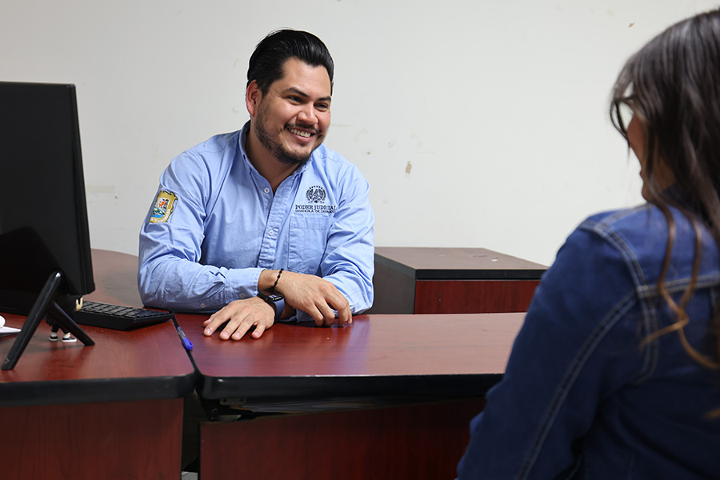
Asuntos en mediación en materia penal y reparación del daño
En el ámbito penal, la mediación propone una manera distinta de afrontar el delito, más cercana a las personas y menos centrada únicamente en el castigo. Se apoya en la participación libre y consciente de quien ha cometido la infracción y de quien la ha sufrido, invitándolos a sentarse a dialogar bajo la guía de una persona mediadora. El objetivo no es otro que buscar una reparación justa del daño y una salida equilibrada al conflicto, atendiendo a los intereses reales de ambas partes.
Desde la justicia restaurativa, se busca comprender qué ha ocurrido, por qué ha sucedido y qué consecuencias ha dejado en la vida de las personas implicadas, reconociendo que detrás de cada delito hay una historia y un impacto humano que no puede ignorarse.
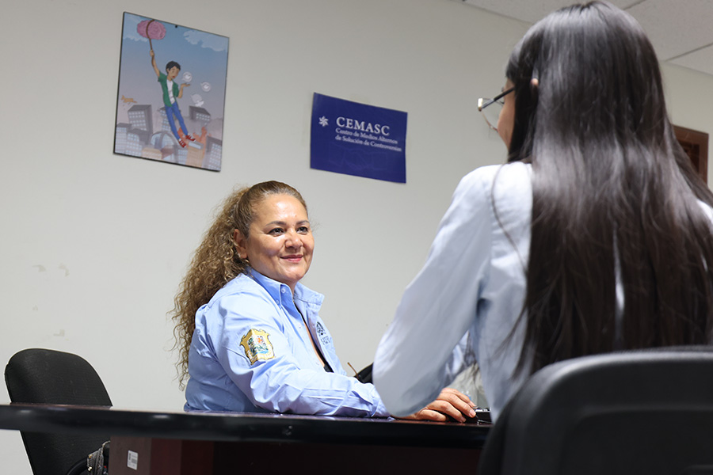
El proceso crea un espacio de comunicación cuidado, donde se abordan las causas profundas del conflicto y sus efectos. La víctima recupera un lugar central: no solo es escuchada, sino que participa activamente en la forma de resolver lo sucedido. Esa participación refuerza su protección, ya sea mediante la reparación directa del daño, o a través de medidas que alivien sus consecuencias.
Al mismo tiempo, la mediación permite que la persona imputada por un delito asuma de manera real y consciente la responsabilidad por sus actos. Al enfrentarse al daño causado y comprometerse con su reparación, se favorece la reinserción social, entendida no como un trámite, sino como un proceso de cambio y responsabilidad compartida.
De esta manera, en el año que se informa, logramos acuerdos reparatorios por un monto de siete millones 318 mil 560 pesos, con 273 asuntos judiciales canalizados y 103 resueltos.
Tabla 6. Mediación en materia penal y reparación del daño
| Delegación | Solicitados | Iniciados | Acuerdo | Monto | Inmediato | Diferido | Total de Asuntos Resueltos |
|---|---|---|---|---|---|---|---|
| Acuña | 9 | 8 | 1 | $80,000.00 | 0 | 1 | 1 |
| Monclova | 60 | 41 | 32 | $112,300.00 | 2 | 30 | 32 |
| Piedras Negras | 25 | 15 | 14 | $839,460.00 | 0 | 14 | 14 |
| Sabinas | 18 | 14 | 5 | $71,300.00 | 2 | 3 | 5 |
| Saltillo | 160 | 159 | 50 | $6,205,500.00 | 10 | 40 | 50 |
| Torreón | 1 | 1 | 1 | $10,000.00 | 1 | 0 | 1 |
| Total | 273 | 238 | 103 | $7,318,560.00 | 15 | 88 | 103 |
Fuente: Centro de Medios Alternos de Solución de Controversias. Poder Judicial del Estado de Coahuila de Zaragoza. 2025.
Centro de Evaluación Psicosocial
Una de las prioridades del Poder Judicial de Coahuila es la protección integral del interés superior de la niñez y adolescencia; por lo que a través del Centro de Evaluación Psicosocial (CEP) brindamos atención a las necesidades psicosociales y psicoemocionales que sobrevienen a las familias como consecuencia de los juicios o procedimientos del orden familiar en que se ven involucradas.
La protección de niñas, niños y adolescentes exige que el sistema de justicia les ofrezca espacios seguros, acompañamiento especializado, condiciones que favorezcan su desarrollo integral y resoluciones que prioricen la tutela de sus derechos por encima de cualquier otro interés.
Por ello, el CEP está conformado por profesionales en psicología y trabajo social que brindan apoyo directo a las y los juzgadores en todos aquellos casos donde participan personas menores de edad o se requiere un peritaje psicosocial con enfoque sistémico. Su labor resulta indispensable para comprender a profundidad las circunstancias que rodean a cada familia.
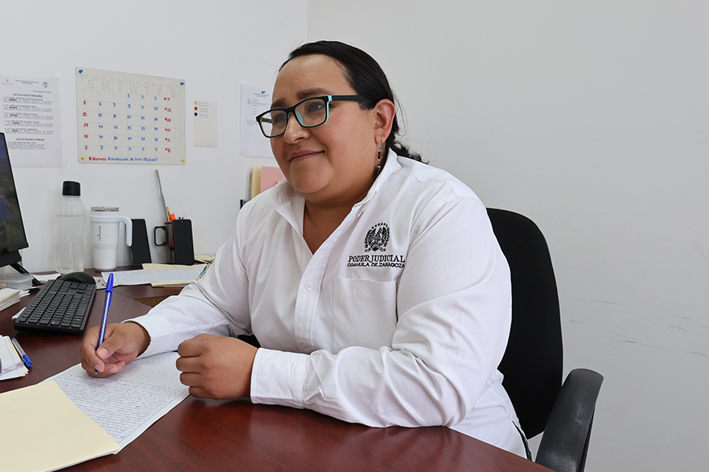
Las y los especialistas realizan entrevistas a detalle, visitas domiciliarias y estudios sobre el entorno en el que viven quienes atraviesan un proceso judicial. Además, evalúan las capacidades parentales y el nivel de responsabilidad que madres, padres o tutores pueden asumir respecto al cuidado de sus hijas e hijos. Para ello, aplican herramientas y métodos psicológicos que permiten obtener un panorama preciso y sensible de la dinámica familiar.
A través de estas evaluaciones buscamos que las resoluciones jurisdiccionales contemplen la etapa de desarrollo, necesidades emocionales y condiciones particulares de cada niña, niño y adolescente involucrado, garantizando una atención integral, diferenciada y especializada.
Además, el acompañamiento que realizamos favorece entornos amigables, reduce impactos negativos derivados del conflicto y prioriza su integridad emocional y física como consideración frente a cualquier interés procesal.
En este periodo, proporcionamos atención profesional a 30 mil 816 personas en las ocho unidades distribuidas en los distritos judiciales del estado, de las cuales se atendieron a 16 mil 973 en el área de trabajo social y a 13 mil 843 en el área de psicología.
Tabla 7. Casos Atendidos por unidad del Centro de Evaluación Psicosocial
| Acuña | Carbonífera | Centro | Laguna | Norte | Parras | San Pedro | Sureste | Total | |
|---|---|---|---|---|---|---|---|---|---|
| Personas atendidas por psicología | 484 | 411 | 2,693 | 2,740 | 1,106 | 233 | 303 | 5,873 | 13,843 |
| Personas atendidas por trabajo social | 1,034 | 725 | 2,844 | 3,220 | 1,677 | 326 | 296 | 6,851 | 16,973 |
Fuente: Centro de Evaluación Psicosocial. Poder Judicial del Estado de Coahuila de Zaragoza. 2025.
Derivado de lo anterior, emitimos tres mil 299 dictámenes psicosociales, de los cuales dos mil 342 fueron remitidos a los órganos jurisdiccionales para apoyar la valoración judicial. A la par, elaboramos 957 informes a través de nuestro personal de trabajo social, los cuales fueron canalizados al área de psicología para robustecer el análisis técnico requerido en cada asunto.
Tabla 8. Dictámenes realizados por el Centro de Evaluación Psicosocial
| Acuña | Carbonífera | Centro | Laguna | Norte | Parras | San Pedro | Sureste | |
|---|---|---|---|---|---|---|---|---|
| Dictámenes entregados a juzgados | 122 | 58 | 471 | 469 | 247 | 41 | 34 | 900 |
| Informes de trabajo social entregados a psicología | 59 | 45 | 170 | 176 | 126 | 14 | 17 | 350 |
Fuente: Centro de Evaluación Psicosocial. Poder Judicial del Estado de Coahuila de Zaragoza. 2025.
A fin de asegurar rigor metodológico e imparcialidad en cada intervención, realizamos 25 mil 559 entrevistas, de las cuales 16 mil 428 fueron realizadas por trabajo social y nueve mil 171 por personal de psicología. Asimismo, llevamos a cabo 20 mil 519 investigaciones de campo.
Derivado de este trabajo, recopilamos información objetiva sobre las personas evaluadas, sus dinámicas familiares y sus entornos de convivencia, dotando a los dictámenes de un sustento profesional verificable y acorde con las obligaciones éticas de la función pericial.
Tabla 9. Entrevistas realizadas por el Centro de Evaluación Psicosocial
| Casos canalizados | Acuña | Carbonífera | Centro | Laguna | Norte | Parras | San Pedro | Sureste | Total |
|---|---|---|---|---|---|---|---|---|---|
| Entrevistas de trabajo social | 1,024 | 728 | 2,884 | 3,239 | 1,451 | 330 | 257 | 6,515 | 16,428 |
| Entrevistas de psicología | 465 | 160 | 2,328 | 2,740 | 1,098 | 188 | 228 | 1,964 | 9,171 |
| Visitas de investigación de campo | 946 | 413 | 3,388 | 3,510 | 1,561 | 436 | 266 | 9,999 | 20,519 |
Fuente: Centro de Evaluación Psicosocial. Poder Judicial del Estado de Coahuila de Zaragoza. 2025.
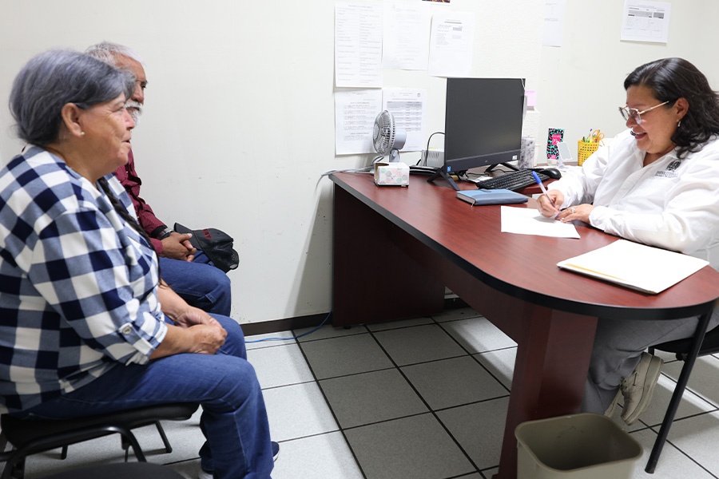
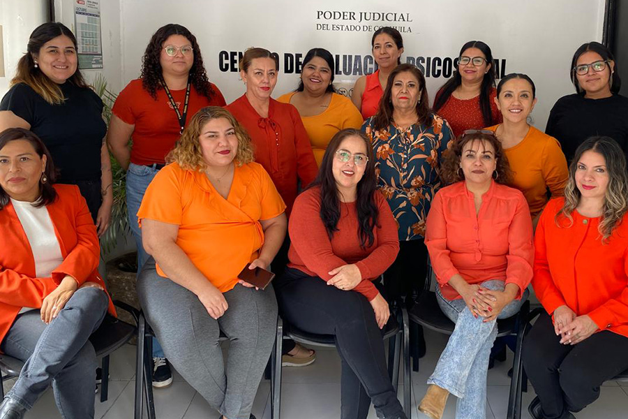
De igual manera, llevamos a cabo evaluaciones de capacidad para comparecencia que incluyeron a 598 niñas y 589 niños, quienes fueron valorados para determinar si estaban emocional y cognitivamente preparados para rendir testimonio. De acuerdo con estas evaluaciones, un 44 por ciento se consideraron aptos para declarar ante la autoridad jurisdiccional, asegurando que su participación no implique exposición a riesgos, ni que dañen su estabilidad emocional.
Tabla 10. Comparecencias de niñas y niños en audiencias
| Comparecencias | Acuña | Carbonífera | Centro | Laguna | Norte | Parras | San Pedro | Sureste | Total |
|---|---|---|---|---|---|---|---|---|---|
| Niños en audiencias | 11 | 18 | 113 | 104 | 74 | 11 | 2 | 256 | 589 |
| Niñas en audiencias | 13 | 11 | 109 | 117 | 73 | 13 | 3 | 259 | 598 |
Fuente: Centro de Evaluación Psicosocial. Poder Judicial del Estado de Coahuila de Zaragoza. 2025.
En apego a este criterio protector, asistimos a 330 audiencias para acompañar a niñas, niños y adolescentes durante su comparecencia, proporcionando contención emocional y asegurando que su intervención ocurriera en condiciones adecuadas a su edad y situación emocional.
Tabla 11. Acompañamiento en audiencias
| Comparecencias | Acuña | Carbonífera | Centro | Laguna | Norte | Parras | San Pedro | Sureste | Total |
|---|---|---|---|---|---|---|---|---|---|
| Asistencia a audiencias | 4 | 24 | 38 | 65 | 28 | 3 | 3 | 165 | 330 |
Fuente: Centro de Evaluación Psicosocial. Poder Judicial del Estado de Coahuila de Zaragoza. 2025.
De igual forma, asistimos a mil 750 audiencias de desahogo de dictámenes, espacios donde nuestro personal especializado sustentó técnicamente sus informes y permitió a las partes interrogarnos en condiciones de contradicción y transparencia, como exige la legislación procesal de cada materia y preservando el interés superior de la infancia.
Tabla 12. Acompañamiento a audiencias de evaluaciones
| Comparecencias | Acuña | Carbonífera | Centro | Laguna | Norte | Parras | San Pedro | Sureste | Total |
|---|---|---|---|---|---|---|---|---|---|
| Asistencia a audiencias de evaluaciones | 19 | 121 | 231 | 201 | 198 | 30 | 43 | 907 | 1,750 |
Fuente: Centro de Evaluación Psicosocial. Poder Judicial del Estado de Coahuila de Zaragoza. 2025.
Asimismo, auxiliamos a los Juzgados Especializados en Violencia Familiar contra la Mujer, elaborando diagnósticos de interacción familiar, con el objetivo de contribuir a que las personas juzgadoras cuenten con herramientas especializadas que les permitan determinar con mayor precisión las medidas pertinentes para atender, prevenir y erradicar la violencia familiar.
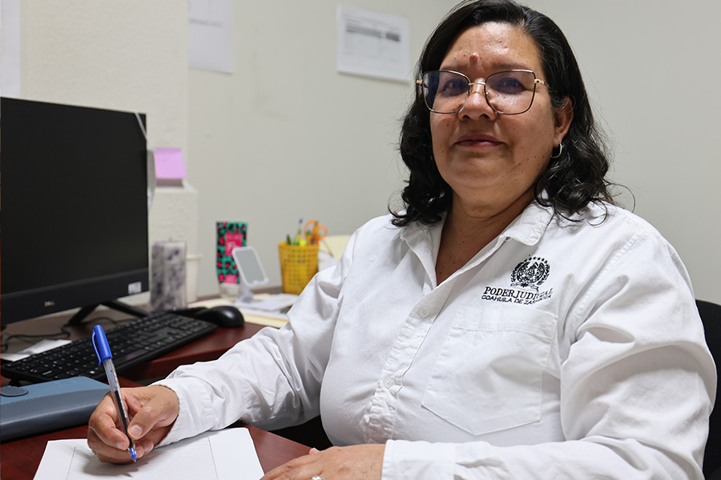
De este modo, fortalecemos la toma de decisiones judiciales orientadas a la protección integral de las mujeres, así como a la salvaguarda de sus hijas e hijos, asegurando la eficacia de las medidas de protección y el acceso a una justicia con perspectiva de género y enfoque de derechos humanos.
En ese sentido, durante el 2025, brindamos atención a 589 personas, efectuamos 567 entrevistas, emitimos 55 diagnósticos, realizamos 367 visitas domiciliarias y acudimos a 20 audiencias, con el objeto de testificar como peritos expertos en los distritos judiciales de Coahuila.
Como resultado, los juzgados cuentan con información confiable y criterios técnicos que fortalecen la objetividad en la toma de decisiones. De esta manera, se promueve una justicia sensible y accesible, plenamente comprometida con la protección efectiva del interés superior de la infancia.
Tabla 13. Apoyo brindado a los Juzgados Especializados en Violencia Familiar contra la Mujer
| Comparecencias | Acuña | Carbonífera | Centro | Laguna | Norte | Parras | San Pedro | Sureste | Total |
|---|---|---|---|---|---|---|---|---|---|
| Personas atendidas | 170 | 35 | 68 | 0 | 77 | 0 | 0 | 239 | 589 |
| Audiencias | 2 | 4 | 4 | 0 | 2 | 0 | 0 | 8 | 20 |
| Entrevistas | 162 | 35 | 65 | 0 | 76 | 0 | 0 | 229 | 567 |
| Informes | 8 | 2 | 10 | 2 | 6 | 0 | 0 | 27 | 55 |
| Visitas | 84 | 0 | 41 | 0 | 46 | 0 | 0 | 196 | 367 |
Fuente: Centro de Evaluación Psicosocial. Poder Judicial del Estado de Coahuila de Zaragoza. 2025.
Registro Estatal de Deudores Alimentarios Morosos (REDAM)
En el Poder Judicial del Estado de Coahuila fortalecimos las acciones dirigidas a la protección de los derechos de niñas, niños y adolescentes mediante la operación del Registro Estatal de Deudores Alimentarios Morosos (REDAM), herramienta pionera a nivel nacional que permite identificar a las personas que incumplen con el pago de la pensión alimenticia.
Durante el ejercicio 2025, expedimos 231 constancias de no registro solicitadas para acreditar el cumplimiento de las obligaciones alimentarias en diversos trámites legales y administrativos. Esta actividad da cuenta del compromiso institucional con la transparencia, la certeza jurídica y el reconocimiento de quienes cumplen responsablemente con dichas obligaciones.
Desde 2024, el REDAM se encuentra enlazado con el Registro Nacional de Obligaciones Alimentarias (RNOA), lo que ha permitido ampliar su alcance y efectividad. La constancia de no deudor emitida por el RNOA es un requisito para la obtención de licencias y permisos para conducir; la expedición de pasaporte o documentos de identidad y viaje; la participación para ocupar a cargos de elección popular; la participación como aspirante a cargos de personas juzgadoras y magistraturas en los ámbitos local y federal; la realización de actos ante notario público relacionados con la compraventa de bienes inmuebles y la constitución o transmisión de derechos reales; así como en las solicitudes de matrimonio, en las que el Registro Civil informa si alguno de los contrayentes se encuentra inscrito en el registro y la situación que guarda respecto de sus obligaciones alimentarias.
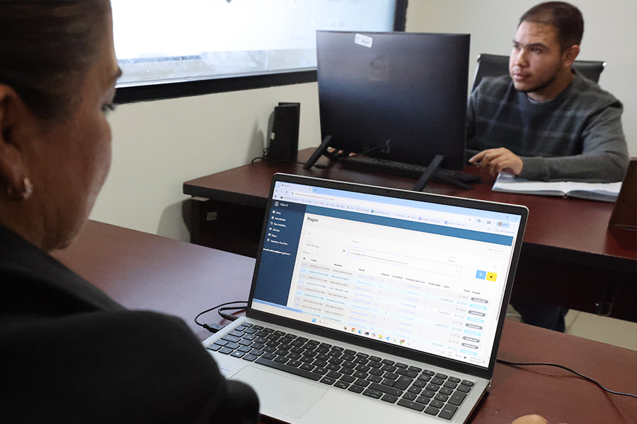
Además, este año, sostuvimos diversas reuniones con personal de la Procuraduría de Protección de Niñas, Niños y Adolescentes de DIF Nacional, en las cuales realizamos recomendaciones para enriquecer el RNOA.
Contar con un registro actualizado de deudores alimentarios nos ha permitido actuar con mayor oportunidad ante los casos de incumplimiento, fortalecer la eficacia de las medidas judiciales y contribuir a una justicia más ágil y cercana a la ciudadanía, con impacto directo en la protección y restitución de los derechos de niñas, niños y adolescentes. Por lo que, al cierre de 2025, contabilizamos 321 personas registradas.
Asimismo, como parte de la coordinación interinstitucional, a través del REDAM rendimos los informes requeridos por el Instituto Nacional Electoral en el marco de los procesos electorales estatales y federales.
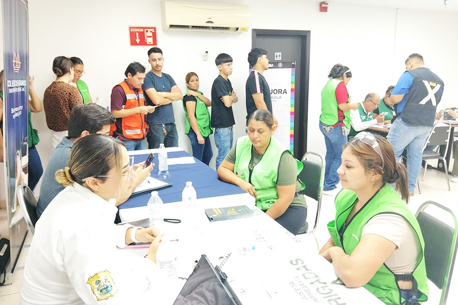
Justicia Itinerante
No puede haber justicia si ésta no es accesible, si no llega a cada rincón del estado, si no responde a las realidades y desafíos de las comunidades más alejadas o los grupos en situación de vulnerabilidad. Por ello, es necesario tender puentes entre ciudadanía, instituciones y dependencias de gobierno que coadyuven a garantizar el acceso a la justicia.
Conscientes de la necesidad de poner en marcha estrategias que aseguren que la justicia llegue a quienes más lo necesitan, en coordinación con Mejora Coahuila y la Secretaría de Educación estatal, realizamos brigadas de orientación y asesoría jurídica accesible para proporcionar atención en las materias civil, familiar y mercantil, a personas que, por su situación económica, no pueden costear una representación legal.
A través de esta colaboración, hemos participado en 27 brigadas con Mejora Coahuila y en ocho con la Secretaría de Educación del Estado, beneficiando a dos mil 794 personas en situación de vulnerabilidad, garantizando que reciban orientación legal oportuna y de calidad. También, llevamos a cabo 14 brigadas en los diferentes Centros Penitenciarios del Estado y tres en ejidos del municipio de Torreón.
Adicionalmente, continuamos con la colaboración con la Universidad Autónoma de Coahuila para brindar asesorías y trámites a quienes más lo necesitan, participando en cuatro brigadas del programa “Juris te Orienta”. Cada contacto con quienes solicitan nuestra ayuda se basa en una atención respetuosa, empática y en la firme convicción de que es posible encontrar la mejor solución para sus problemas. Este enfoque nos permite cumplir no solo con nuestra obligación institucional, sino también contribuir a la creación de un entorno más justo e inclusivo.
De este modo, no solo trabajamos para que la justicia sea más accesible, sino que también aseguramos que, en igualdad de condiciones, las y los coahuilenses tengan la oportunidad de hacer valer sus derechos y recibir el apoyo necesario para resolver sus conflictos legales.
Instituto Estatal de Defensoría Pública
El Instituto Estatal de Defensoría Pública (IEDP) es un órgano no jurisdiccional al servicio de las y los coahuilenses, creado para resguardar sus libertades y derechos. El trabajo diario se sustenta en una atención cercana: asesoramos, orientamos, representamos y defendemos a quien lo necesita en cualquier materia jurídica, siempre con la convicción de proteger y ampliar los derechos humanos y sociales.
A través del IEDP hemos logrado que la ciudadanía coahuilense en situación de vulnerabilidad acceda a mecanismos legales para ejercer sus derechos. Nuestros servicios buscan reducir desigualdades y garantizar que cada persona cuente con una defensa efectiva en condiciones reales de igualdad. Con ello, fortalecemos el Estado de Derecho.
Este compromiso se sostiene con acciones constantes y estrategias que acercan la justicia a todas y todos. Por lo que, este año, pusimos en marcha un sistema digital en las diferentes delegaciones que conforman el IEDP en el estado, por el cual recibimos información mensual de los juicios iniciados, en trámite y los concluidos. Con este sistema hemos logrado depurar expedientes y tener estadística actualizada.
Asimismo, cambiamos la sede de la Unidad de Defensa Civil, Familiar y Mercantil de la delegación Torreón, a un edificio más amplio y adecuado, a fin de brindar el servicio con mayor calidez.
Los servicios que ofrecemos, gratuitos y de calidad, se dirigen de manera preferente a personas que, por razones sociales, económicas o debido a otras desigualdades estructurales tienen mayores obstáculos para ejercer su derecho de acceso a la justicia.
A partir de esta premisa, durante el periodo que se informa, nombramos a tres Jefaturas de Supervisión de Causa, dos para la Unidad de Defensa Civil, Familiar y Mercantil y una para la Unidad de Defensa Penal, logrando así coordinar los trabajos por materia, brindando de forma especializada la atención jurídica, mejorando la calidad del servicio, aumentando la productividad, el desarrollo profesional y la toma de decisiones.
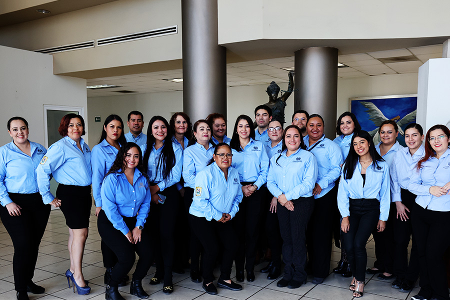
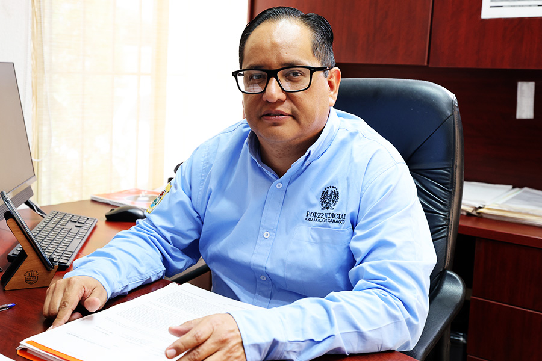
De forma adicional, aumentamos la plantilla jurídica para eficientar la atención de las y los usuarios, por lo que se incorporó a un asesor jurídico en Parras, dos en Saltillo y cinco en Torreón, logrando una redistribución de cargas de trabajo.
Asimismo, integramos a un perito para la realización de dictámenes en las materias de grafoscopía, documentoscopía, criminalística de campo y evaluaciones de bienes inmuebles para el desarrollo de la investigación del proceso técnico de los juicios.
La incorporación de la prueba pericial ha tenido un impacto positivo reflejado en favor de las personas representadas que en su mayoría se encuentran en situaciones de vulnerabilidad, permitiendo un importante ahorro monetario.
Lo anterior, se refleja dentro del periodo reportado con las siguientes intervenciones: realizamos 32 evaluaciones de bienes inmuebles, 16 dictámenes de grafoscopía, cuatro de criminalística de campo y 14 de documentoscopía dentro de los juicios en las materias mercantil, civil y penal.
El trabajo coordinado de las diferentes unidades que integran el IEDP refleja nuestra misión de actuar con responsabilidad, profesionalismo y pleno respeto al marco constitucional.
Este año damos cuenta del esfuerzo realizado a nivel estatal, y a través del IEDP atendimos a 154 mil 817 personas. La Unidad de Atención Ciudadana y Defensa Administrativa brindó servicio a 70 mil 696 personas; la Unidad de Defensa Civil, Familiar y Mercantil, a 61 mil 186; y la Unidad de Defensa Penal, a 16 mil 438. Por su parte, en la Coordinación de Calidad atendimos seis mil 372 solicitudes, mientras que en la Coordinación de Comunicación Social apoyamos a 125 usuarias y usuarios.
Cada persona atendida representa el centro de nuestra labor y la razón por la que seguimos trabajando con firmeza y sentido de justicia.
Tabla 14. Personas atendidas en las diferentes áreas del IEDP
| Área | Personas atendidas |
|---|---|
| Unidad de Atención Ciudadana y Defensa Administrativa | 70,696 |
| Unidad de Defensa Civil, Familiar y Mercantil | 61,186 |
| Unidad de Defensa Penal | 16,438 |
| Coordinación de Calidad | 6,372 |
| Coordinación de Comunicación Social | 125 |
| Total | 154,817 |
Fuente: Instituto Estatal de Defensoría Pública. Poder Judicial del Estado de Coahuila de Zaragoza. 2025.
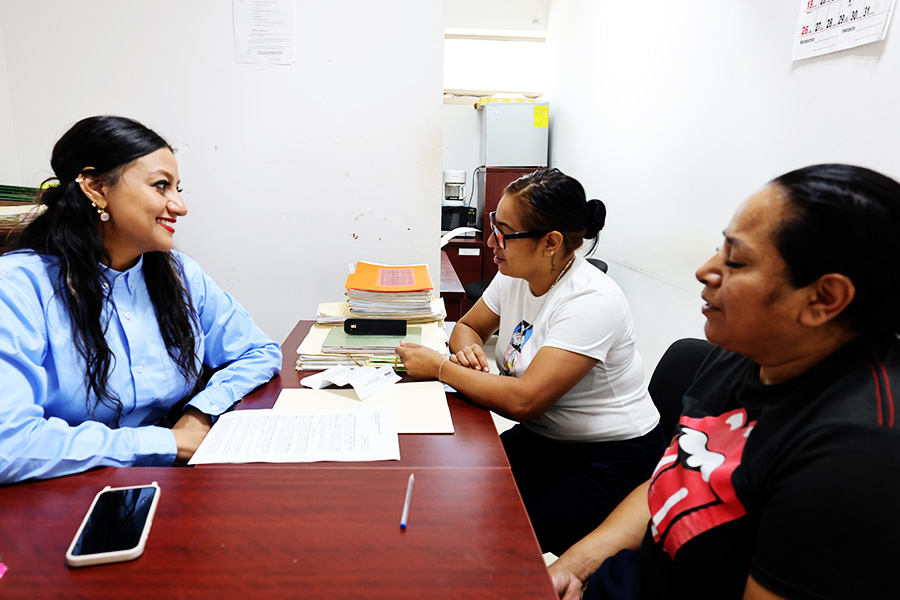
Unidad de Atención Ciudadana y Defensa Administrativa
En el Poder Judicial del Estado entendemos la justicia como un ejercicio profundamente humano; así, cada asunto que llega al Instituto Estatal de Defensoría Pública exige sensibilidad, respeto y una mirada que reconozca las distintas realidades que atraviesan a las personas. Mantenemos nuestro propósito de disminuir la distancia entre el derecho a la justicia y aquellos factores económicos, sociales o culturales que suelen convertirse en barreras para ejercerla plenamente.
Asumimos el compromiso de atender a la ciudadanía que requiere orientación, asesoría, defensa administrativa y acompañamiento para facilitar el ejercicio de sus derechos, el cumplimiento de sus deberes y el acceso a la justicia, con igualdad, sin discriminación y con absoluta transparencia.
En este esfuerzo, la Unidad de Atención Ciudadana y Defensa Administrativa del IEDP ocupa un lugar esencial. Su carácter transversal e interdisciplinario nos permite ofrecer a la ciudadanía una atención integral, cercana y efectiva, capaz de responder a las necesidades reales de quienes buscan orientación y defensa.
Nuestro objetivo es coordinar y supervisar el apoyo y seguimiento a las peticiones de las personas usuarias que acudan o sean remitidas al IEDP, desde su recepción hasta su resolución final.
Como parte de nuestro servicio informamos que este año beneficiamos a 52 mil 324 personas a quienes se les dio un total de 74 mil 674 servicios a través de los diversos procesos del área, tales como enlace, atención inicial, trabajo social y psicología, y estudios socioeconómicos; de igual manera canalizamos seis mil tres asuntos a la Unidad de Defensa Civil, Familiar y Mercantil para inicio de juicio, y dos mil 784 al Centro de Medios Alternos de Solución de Controversias; así como a 764 personas a diversas dependencias gubernamentales.
En lo que corresponde a la impartición del Taller de Orientación Prematrimonial (TOP), en 2025, ofrecimos 210 talleres, en las que orientamos a 13 mil 334 personas (seis mil 987 parejas), de las cuales, 708 fueron en Acuña; dos mil 543 en Monclova; 329 en Parras; mil 309 en Piedras Negras; 960 en Sabinas; cuatro mil 048 en Saltillo; 344 en San Pedro; y tres mil 197 en Torreón.
De forma adicional, difundimos pláticas a parejas que desean regularizar su estado civil a fin de contraer nupcias, a solicitud de instituciones gubernamentales como el DIF Coahuila y distintos Centros Penitenciarios.
Aunado a lo anterior, coadyuvamos en la celebración de 16 bodas comunitarias, tres en Acuña, una en Monclova, cuatro en Sabinas, tres en Saltillo y cinco en San Pedro, garantizando a las y los coahuilenses su derecho al matrimonio.
A fin de garantizar y salvaguardar los derechos de las personas en situación de vulnerabilidad y proteger la tutela judicial efectiva proporcionamos apoyo en nuestros servicios de asesoría y orientación a dos mil 172 adultos mayores: 338 en Acuña; 15 en Monclova; 34 en Parras; 206 en Sabinas; 497 en Saltillo; 69 en San Pedro; y mil 013 en Torreón, a fin de reducir las dificultades a las que se enfrentan cotidianamente.
Por otro lado, proporcionamos apoyo jurídico a las y los servidores públicos sujetos a un procedimiento administrativo, en las que desahogamos 43 audiencias.
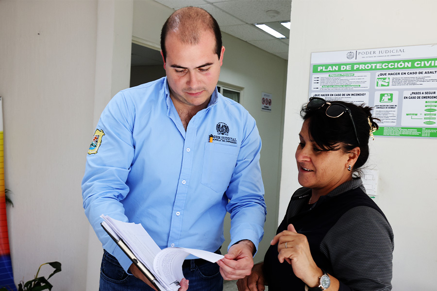
Tabla 15. Unidad de Atención Ciudadana y Defensa Administrativa del IEDP
| Proceso | Personas atendidas |
|---|---|
| Enlace, Trabajo Social y Atención Inicial | 52,324 |
| Atención al Adulto Mayor | 2,172 |
| Taller de Orientación Prematrimonial | 13,334 |
| Acompañamiento jurídico a servidores públicos | 45 |
| Brigadas de orientación y asesoría jurídica | 2,821 |
| Total | 70,696 |
Fuente: Instituto Estatal de Defensoría Pública. Poder Judicial del Estado de Coahuila de Zaragoza. 2025.
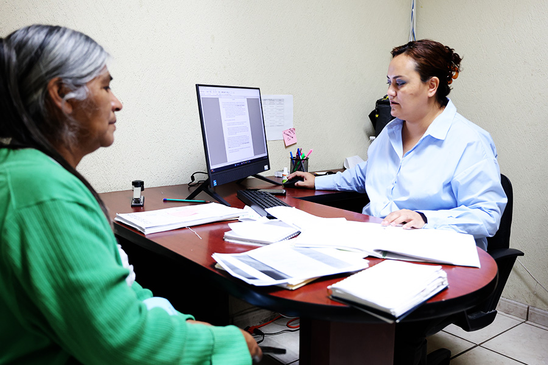
Unidad de Defensa Civil, Familiar y Mercantil
La Unidad de Defensa Civil, Familiar y Mercantil desempeña un papel esencial dentro del Modelo de Justicia de Coahuila al ofrecer atención jurídica centrada en las personas y orientada a resolver situaciones que inciden directamente en la vida cotidiana.
Su labor se dirige a quienes enfrentan conflictos relacionados con derechos y obligaciones civiles, así como a quienes requieren apoyo en asuntos familiares que suelen involucrar aspectos sensibles de su entorno personal y emocional.
En el ámbito mercantil, la Unidad interviene para brindar asesoría y representación a personas involucradas en controversias derivadas de contratos comerciales, especialmente en juicios por cobro de deudas, donde la claridad y el acompañamiento profesional resultan determinantes para proteger el patrimonio y la estabilidad de las personas usuarias.
Con este trabajo, reafirmamos el compromiso del sistema de justicia de Coahuila con un modelo humano y sensible, que coloca a cada persona en el centro de las decisiones y ofrece soluciones que fortalecen su seguridad jurídica, su bienestar y su confianza en las instituciones.
Para alcanzar este objetivo, diseñamos protocolos que aseguran que los servicios legales ofrecidos cumplan con los más altos estándares de profesionalismo y calidad. Nuestro equipo no solo posee una sólida formación en Derecho, sino que también está comprometido con comprender las realidades y necesidades particulares de cada persona, lo que nos permite formular estrategias legales personalizadas, orientadas a ofrecer soluciones prácticas y efectivas.
Por lo que, en 2025, brindamos 11 mil 665 asesorías jurídicas de primera vez y 35 mil 052 subsecuentes. Como resultado, logramos atender 46 mil 717 asesorías jurídicas mediante la Unidad de Defensa Civil, Familiar y Mercantil.
Tabla 16. Asesorías Jurídicas en la Unidad de Defensa Civil, Familiar y Mercantil
| Asesorías Jurídicas | |
|---|---|
| Primera vez | 11,665 |
| Subsecuentes | 35,052 |
| Total | 46,717 |
Fuente: Instituto Estatal de Defensoría Pública. Poder Judicial del Estado de Coahuila de Zaragoza. 2025.
Además, en este periodo, atendimos a 61 mil 186 personas, de las cuales 39 mil 831 fueron mujeres y 21 mil 355 hombres; iniciamos siete mil 643 juicios en los distintos Distritos Judiciales, mientras que tres mil 481 juicios se encuentran aún en trámite y concluimos ocho mil 388, mismos que terminaron con sentencia.
Tabla 17. Actividades realizadas en la Unidad de Defensa Civil, Familiar y Mercantil del IEDP
| Proceso | Atenciones |
|---|---|
| Personas atendidas | 61,186 |
| Juicios iniciados | 7,643 |
| Juicios en trámite | 3,481 |
| Juicios concluidos | 8,388 |
Fuente: Instituto Estatal de Defensoría Pública. Poder Judicial del Estado de Coahuila de Zaragoza. 2025.
Tabla 18. Asuntos iniciados en la Unidad de Defensa Civil, Familiar y Mercantil del IEDP
| Delegación | 2025 |
|---|---|
| Acuña | 127 |
| Monclova | 1,196 |
| Parras | 385 |
| Piedras Negras | 331 |
| Sabinas | 466 |
| Saltillo | 2,602 |
| San Pedro | 359 |
| Torreón | 2,177 |
| Total | 7,643 |
Fuente: Instituto Estatal de Defensoría Pública. Poder Judicial del Estado de Coahuila de Zaragoza. 2025.
Tabla 19. Asuntos en trámite en la Unidad de Defensa Civil, Familiar y Mercantil del IEDP
| Delegación | 2025 |
|---|---|
| Acuña | 157 |
| Monclova | 448 |
| Parras | 236 |
| Piedras Negras | 111 |
| Sabinas | 224 |
| Saltillo | 960 |
| San Pedro | 134 |
| Torreón | 1211 |
| Total | 3,841 |
Fuente: Instituto Estatal de Defensoría Pública. Poder Judicial del Estado de Coahuila de Zaragoza. 2025.
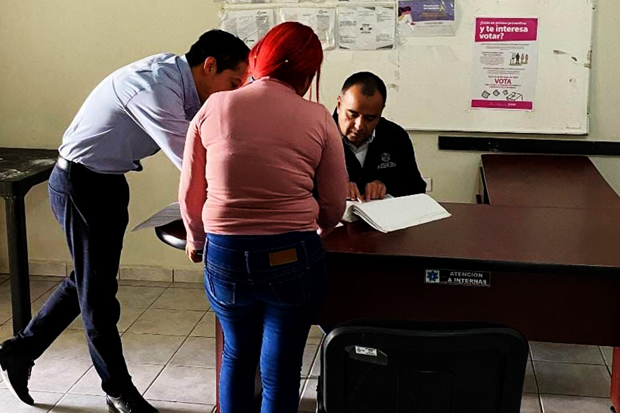
Tabla 20. Asuntos concluidos en la Unidad de Defensa Civil, Familiar y Mercantil del IEDP
| Delegación | 2025 |
|---|---|
| Acuña | 154 |
| Monclova | 1,157 |
| Parras | 378 |
| Piedras Negras | 324 |
| Sabinas | 520 |
| Saltillo | 2,924 |
| San Pedro | 524 |
| Torreón | 2,407 |
| Total | 8,388 |
Fuente: Instituto Estatal de Defensoría Pública. Poder Judicial del Estado de Coahuila de Zaragoza. 2025.
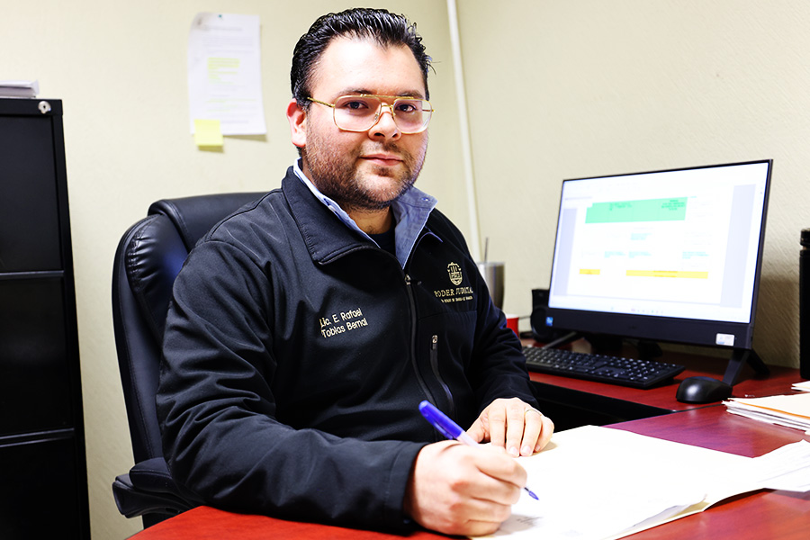
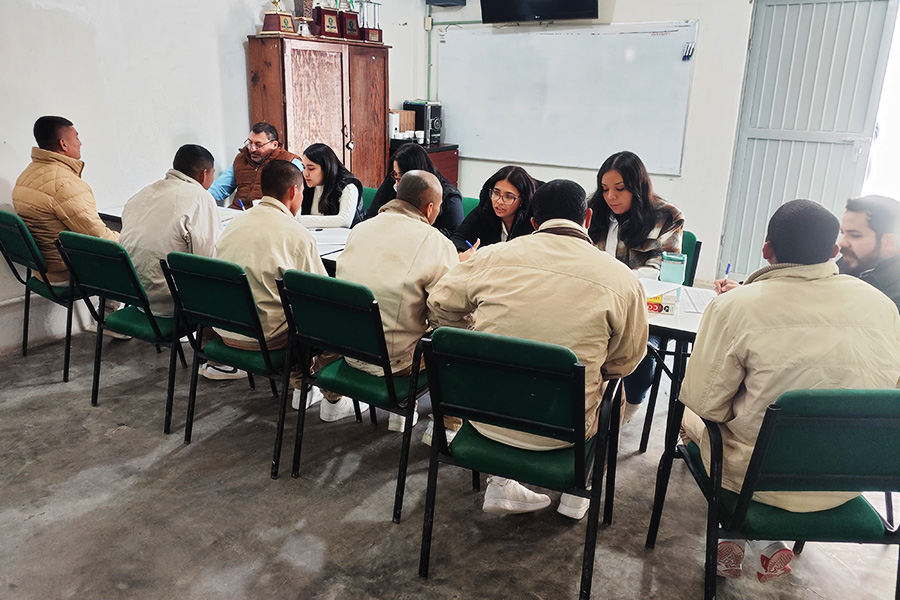
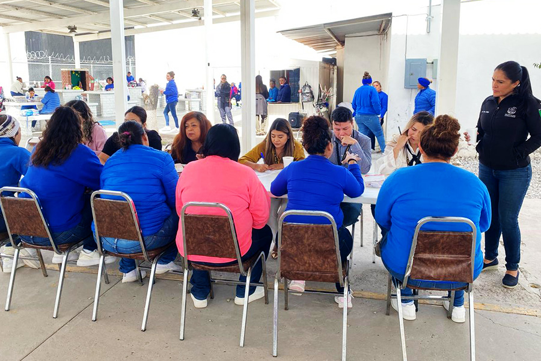
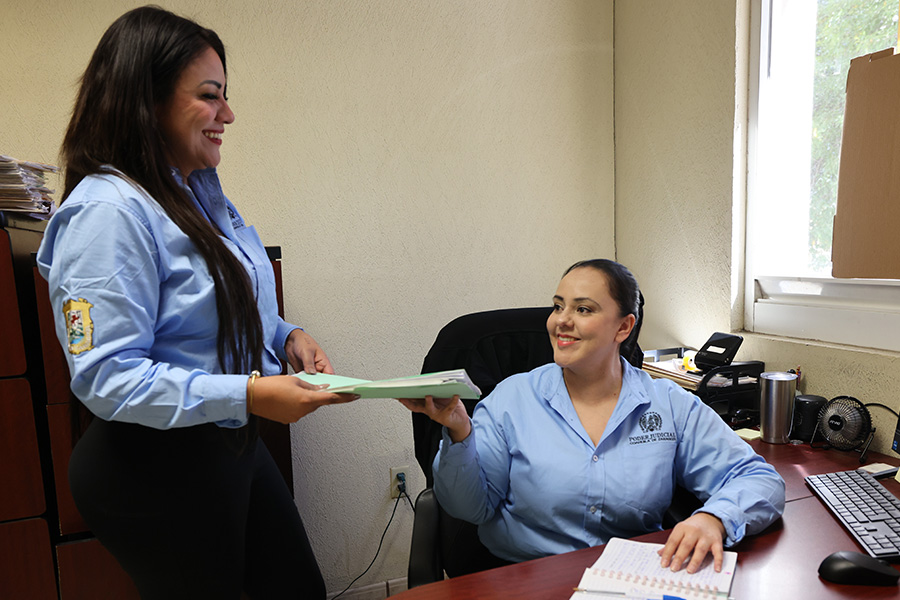
Adicionalmente, atendimos a mil 464 personas no usuarias en audiencias debido a que no cuentan con representación, de acuerdo al artículo 119 del Código Procesal Civil, el cual menciona que si las o los justiciables no están siendo asistidas por un profesional del derecho, la persona juzgadora les nombrará uno dentro del cuerpo de personas defensoras de oficio. En este tenor, en materia Civil, Familiar y Mercantil apoyamos a seis mil 595 personas usuarias en audiencias previas al juicio, lo que dio como resultado la asistencia a 33 mil 481 audiencias.
Tabla 21. Actividades realizadas en la Unidad de Defensa Civil, Familiar y Mercantil del IEDP
| Medios de impugnación | Total |
|---|---|
| Apelaciones | 02 |
| Amparos | 05 |
Fuente: Instituto Estatal de Defensoría Pública. Poder Judicial del Estado de Coahuila de Zaragoza. 2025.
Unidad de Defensa Penal
Desde la Unidad de Defensa Penal del IEDP nos aseguramos que toda persona cuente conun trato justo dentro del sistema judicial estatal. Bajo esta premisa, garantizamos que la presunción de inocencia prevalezca a lo largo de cada etapa procesal y que el acceso a la justicia sea efectivo, evitando actos de criminalización injustificada y promoviendo el respeto pleno a los derechos humanos.
En este poder público, nos orientamos a que cada persona pueda ejercer su derecho a ser escuchada, presentar argumentos, impugnar resoluciones y comprender, de manera accesible, el contenido y alcance de las sentencias.
Con un enfoque humano, velamos por la protección de derechos, impulsando una justicia que combine la sanción con la reparación y que reconozca la dignidad de todas las personas sujetas a un proceso penal.
De esta manera, durante el periodo que se informa, otorgamos 12 mil 030 asesorías jurídicas, realizamos cuatro mil 175 diligencias del Ministerio Público, iniciamos nueve mil 106 asuntos y participamos en 25 mil 151 audiencias. Además, concluimos ocho mil 005 asuntos con diversas salidas alternas.
El logro de estas acciones fue posible gracias al trabajo coordinado con las autoridades administrativas de los Centros de Justicia Penal, el Instituto Estatal de Defensoría Pública y la Fiscalía General del Estado de Coahuila, con el propósito de agilizar los procedimientos judiciales y fortalecer la atención a la ciudadanía. En materia de atención, en el Área Penal Tradicional atendimos a 69 personas, de las cuales 53 fueron hombres y 16 mujeres, y bajo el Sistema Penal Acusatorio y Oral dimos servicio a 16 mil 369 personas, de las cuales 10 mil 581 fueron hombres y cinco mil 788 fueron mujeres.
Tabla 22. Personas atendidas en la Unidad de Defensa Penal del IEDP
| Proceso | Personas atendidas hombres | Personas atendidas mujeres |
|---|---|---|
| Área Penal Tradicional | 53 | 16 |
| Sistema Penal Acusatorio y Oral | 10,581 | 5,788 |
| Total | 10,634 | 5,804 |
Fuente: Instituto Estatal de Defensoría Pública. Poder Judicial del Estado de Coahuila de Zaragoza. 2025.
Tabla 23. Asuntos iniciados en la Unidad de Defensa Penal del IEDP
| Delegación | 2025 |
|---|---|
| Acuña | 611 |
| Monclova | 1,106 |
| Parras | 0 |
| Piedras Negras | 1,341 |
| Sabinas | 692 |
| Saltillo | 2,403 |
| San Pedro | 222 |
| Torreón | 2,731 |
| Total | 9,106 |
Fuente Instituto Estatal de Defensoría Pública. Poder Judicial del Estado de Coahuila de Zaragoza. 2025.
Tabla 24. Asuntos concluidos en la Unidad de Defensa Penal del IEDP
| Delegación | 2025 |
|---|---|
| Acuña | 320 |
| Monclova | 879 |
| Parras | 0 |
| Piedras Negras | 1,127 |
| Sabinas | 653 |
| Saltillo | 1,979 |
| San Pedro | 241 |
| Torreón | 2,806 |
| Total | 8,005 |
Fuente:Instituto Estatal de Defensoría Pública. Poder Judicial del Estado de Coahuila de Zaragoza. 2025.
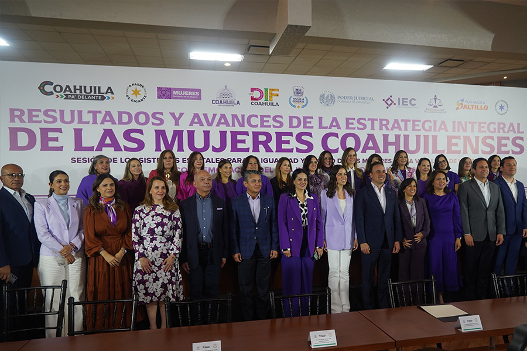
Juzgados Especializados en Violencia Familiar Contra la Mujer
A partir del año 2021, en el Poder Judicial del Estado de Coahuila implementamos los Juzgados Especializados en Violencia Familiar contra la Mujer como una política institucional orientada a la prevención, atención y sanción de la violencia de género. Este modelo, resultado de la coordinación entre diversas instancias del Estado, refrenda nuestro compromiso permanente con la protección de los derechos humanos de las mujeres y con la aplicación efectiva del marco jurídico vigente.
En los ámbitos jurisdiccional y administrativo, consolidamos medidas judiciales, normativas e institucionales que permiten brindar una atención especializada, oportuna y eficaz a los casos de violencia que afectan a las mujeres, así como a sus hijas e hijos, garantizando la tutela integral de sus derechos y fortaleciendo la respuesta institucional.
Durante el periodo que se informa, llevamos a cabo reuniones de trabajo con personal del Centro de Justicia y Empoderamiento de las Mujeres, la Secretaría de las Mujeres y la Fiscalía Especializada para las Mujeres y la Niñez, con el propósito de fortalecer los mecanismos de coordinación interinstitucional con órganos estatales.
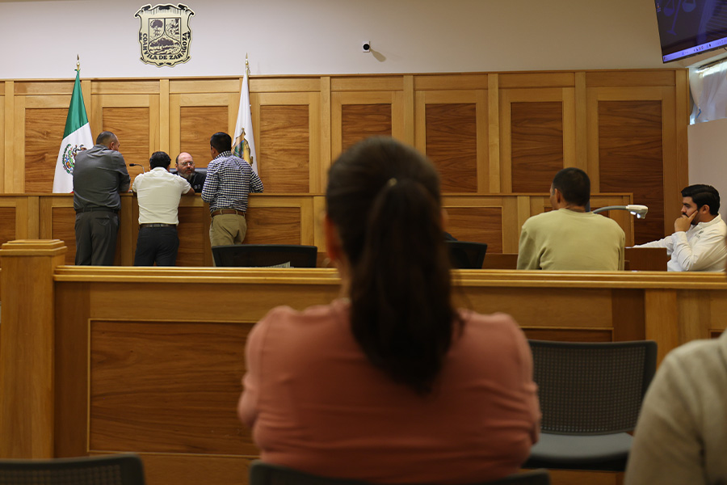
Asimismo, fortalecimos la capacitación continua de las personas juzgadoras especializadas, con énfasis en la prevención de la revictimización, la igualdad sustantiva y la emisión de resoluciones que reconozcan los contextos de desigualdad y eliminen cualquier forma de discriminación en la aplicación del derecho.
Registro Estatal de Personas Sancionadas por Violencia contra las Mujeres
El Registro Estatal de Personas Sancionadas por Violencia contra las Mujeres (REPSVM) se consolida como un mecanismo estratégico para la protección y garantía de los derechos de las mujeres, así como un referente a nivel nacional en materia de transparencia, prevención y combate a la violencia de género. Este instrumento permite a la ciudadanía acceder a información relevante y fortalece la difusión de las resoluciones judiciales emitidas en esta materia.
El REPSVM es un sistema público de información administrativa que concentra el registro de personas sancionadas en el ámbito penal, a partir de sentencias ejecutoriadas, por delitos que implican violencia contra las mujeres y que vulneran derechos fundamentales, entre ellos, la integridad corporal, el libre desarrollo de la personalidad, las libertades y seguridades reproductivas y sexuales, el derecho a la vida y el derecho de las mujeres a vivir libres de violencia en el ámbito familiar y en condiciones de subsistencia digna.
Además, tiene como finalidad contribuir a la reparación del daño a las víctimas, generar datos abiertos que permitan analizar el alcance y las características de la violencia contra las mujeres, y fortalecer las acciones institucionales orientadas a su prevención, atención y erradicación. Asimismo, constituye una herramienta preventiva al atender el riesgo de reincidencia y coadyuvar en la protección de los derechos humanos de las mujeres.
Este sistema de información, disponible a través del portal del Poder Judicial del Estado, integra datos como el nombre de la persona sancionada, el delito genérico y específico, el tipo de sentencia y la pena impuesta. Al cierre del presente periodo, el registro concentra un total de mil 576 personas sancionadas.
Con el REPSVM es posible visibilizar las conductas que vulneran derechos fundamentales y se ha convertido en una herramienta clave para fortalecer la conciencia social, apoyar a las víctimas y potenciales víctimas, y promover una actuación informada y corresponsable de la sociedad en la prevención y erradicación de la violencia contra las mujeres.
Espacios dignos y adecuados
Durante 2025, nos enfocamos en garantizar que la impartición de justicia se desarrolle en entornos dignos, seguros y funcionales. La modernización, el mantenimiento y la creación de espacios adecuados no solo responden a necesidades operativas, sino que representan una inversión a largo plazo en favor de la eficiencia institucional, la accesibilidad de las personas usuarias y el bienestar de las y los servidores judiciales.
Estos esfuerzos se tradujeron en la consolidación de sedes judiciales más modernas, inclusivas y humanas, capaces de responder a las exigencias del contexto actual, al mismo tiempo que se preserva y valoriza el patrimonio institucional.
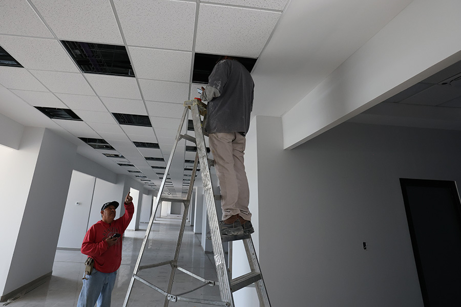
La construcción de espacios especializados, la remodelación de inmuebles en distintos distritos judiciales, así como el mejoramiento continuo de instalaciones administrativas y jurisdiccionales con un enfoque en funcionalidad, seguridad y atención a las necesidades institucionales, reafirman la convicción de que la infraestructura no es un elemento accesorio, sino un pilar fundamental para ofrecer una justicia más cercana a la ciudadanía.
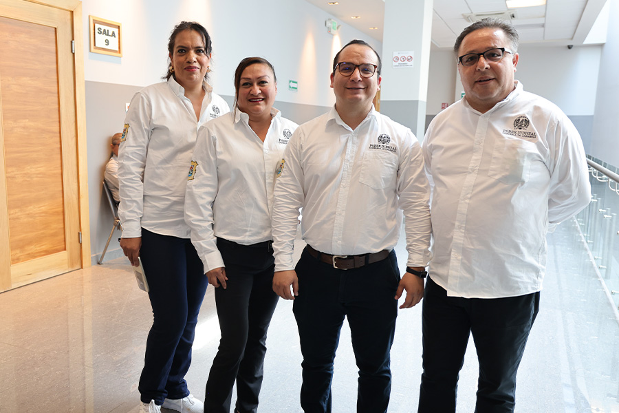
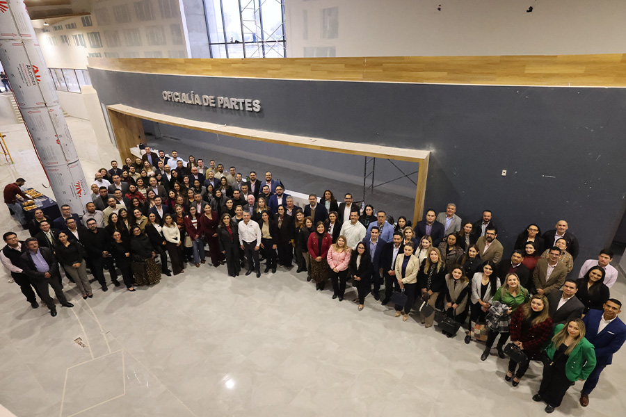
Ciudad Judicial de Saltillo
Al cierre de 2025, la Ciudad Judicial de Saltillo se encuentra en su etapa final de equipamiento, consolidándose como uno de los proyectos más relevantes para el fortalecimiento del sistema de justicia en la entidad. Este nuevo complejo no solo representa una infraestructura moderna y funcional, sino un símbolo tangible del compromiso institucional con una justicia más eficiente, cercana y al servicio de las personas y del resultado de la coordinación con los distintos poderes públicos.
Ubicada estratégicamente sobre el bulevar Fundadores, entre el bulevar Luis Donaldo Colosio y la calle Futura, de la capital del estado, la Ciudad Judicial se levanta en un predio de 20 mil metros cuadrados, los cuales albergan 14 mil metros cuadrados de construcción y 12 mil 300 metros cuadrados de vialidades y estacionamientos.
Este espacio fue pensado para concentrar, en un solo lugar, las salas de audiencia de los juzgados en materias civil, mercantil, familiar y laboral, así como el Tribunal de Disciplina, el Órgano de Administración Judicial, y los órganos no jurisdiccionales y administrativos, como el Centro de Medios Alternos de Solución de Controversias, el Centro de Evaluación Psicosocial, el Instituto Estatal de Defensoría Pública, Archivo Judicial General, entre otros. Esta integración permitirá optimizar procesos, reducir tiempos de espera, evitar traslados innecesarios y resolver miles de asuntos que impactan directamente en la vida cotidiana de las personas usuarias del sistema de justicia.
Con la entrada en operación de la Ciudad Judicial de Saltillo, se implementará un nuevo modelo de gestión judicial, orientado a la eficiencia, y la mejora continua en la atención. Desde su diseño arquitectónico y funcional, el edificio responde a las nuevas exigencias del marco legal y procesal, incorporando espacios modernos como las salas de oralidad, que fortalecen los principios de inmediación, transparencia y acceso efectivo a la justicia.
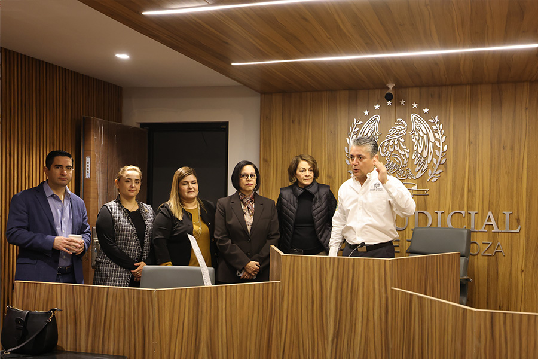
La planta baja alberga una parte sustancial de los servicios destinados al público: salas de audiencia plenamente equipadas, áreas de oficialía de partes, espacios de consulta, archivo, centros de copiado, así como un amplio salón de usos múltiples. Destaca también un área para atención especializada por parte de instancias como el Instituto Estatal de Defensoría Pública, el Centro de Medios Alternos de Solución de Controversias y el Centro de Evaluación Psicosocial. Todo ello se complementa con un estacionamiento con capacidad de más de 300 cajones, elevadores para público y personal, y una adecuada infraestructura tecnológica y eléctrica.
En los niveles superiores y en el edificio lateral se distribuyen de manera ordenada las salas de audiencia adicionales, áreas administrativas, cubículos para personas juzgadoras de primera instancia, magistraturas y personal directivo, salas de juntas, espacios de crecimiento a futuro y zonas de apoyo operativo. Cada área fue planeada para favorecer el trabajo colaborativo, la toma de decisiones y la adecuada atención a las personas usuarias, garantizando condiciones dignas tanto para quienes imparten justicia como para quienes acuden a ella.
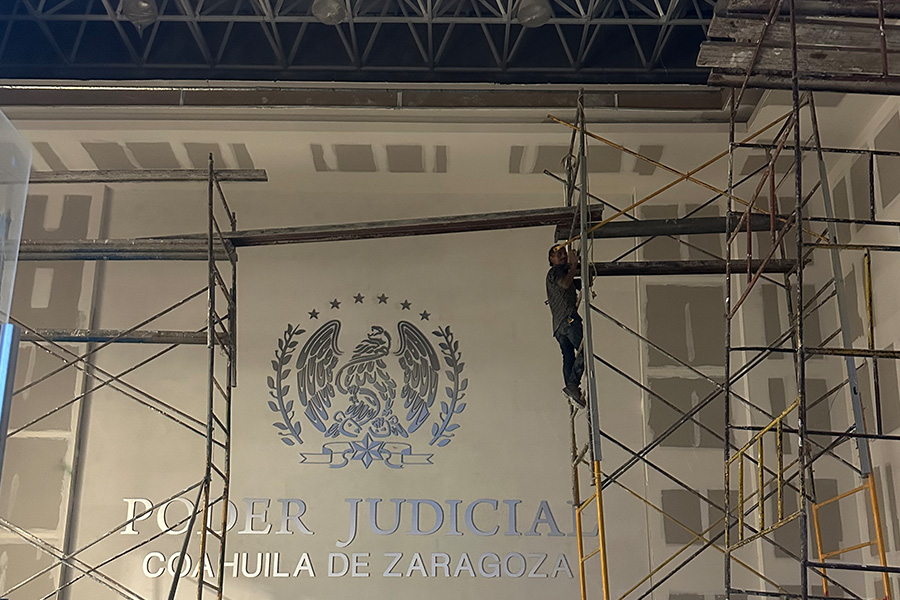
La Ciudad Judicial de Saltillo también destaca por su enfoque humano e incluyente. Cuenta con enfermería, lactario, estancia infantil y espacios para convivencias supervisadas, reconociendo las necesidades reales de las familias y de quienes interactúan diariamente con el sistema judicial. Asimismo, dispone de accesos y circulaciones adaptadas para personas con discapacidad y personas adultas mayores, reafirmando el principio de accesibilidad universal.
En conjunto, este complejo será un referente en la administración e impartición de una justicia más cercana, eficiente, profesional, innovadora y accesible.
Adecuación a la infraestructura en los Distritos Judiciales
Durante el periodo que se informa, en el Poder Judicial del Estado de Coahuila de Zaragoza, llevamos a cabo diversas acciones orientadas al fortalecimiento de la infraestructura, la seguridad de las instalaciones y la mejora de los espacios de trabajo, con el objetivo de garantizar condiciones adecuadas para la prestación del servicio de impartición de justicia en los distintos distritos judiciales del estado.
En el Distrito Judicial de Monclova, realizamos trabajos de cancelería, consistentes en la sustitución de cristales dañados en diversos inmuebles judiciales. También llevamos a cabo trabajos de mantenimiento preventivo y correctivo en plantas eléctricas de emergencia, incluyendo intervenciones mecánicas, cambio de insumos, pruebas técnicas especializadas y suministro de combustible.
En el Distrito Judicial de la Región Carbonífera, reparamos e instalamos bombas de agua en el Centro de Justicia Civil y Familiar, así como en el Centro de Justicia Penal, garantizando el abastecimiento constante de agua en los inmuebles judiciales.
En el Distrito Judicial de Río Grande, en el Centro de Justicia Civil y Familiar, realizamos la reparación e instalación de bombas de agua, efectuamos trabajos de mantenimiento y sustitución de componentes del sistema eléctrico, con el objetivo de proteger el equipo de fluctuaciones de corriente eléctrica, mejorar su durabilidad, y asegurar su operación eficiente. Asimismo, instalamos extractores en la subestación eléctrica, con el fin de prevenir fallas eléctricas derivadas de humedad y proteger los componentes del sistema.
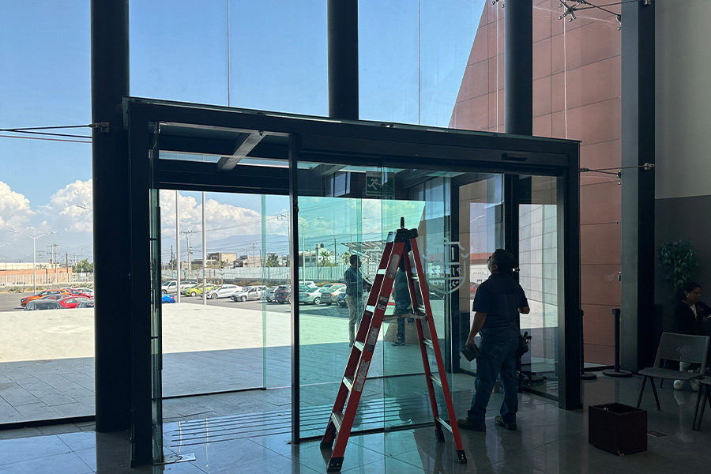
En el Distrito Judicial de Saltillo, en el Centro de Justicia Penal, realizamos la instalación de un regulador de tensión o voltaje de tercera generación, equipado con pantalla para la identificación de parámetros eléctricos y con capacidad de supresión de picos de voltaje de hasta 100 kA. Esta acción tuvo como finalidad mejorar la protección eléctrica de las instalaciones y salvaguardar el funcionamiento del equipamiento tecnológico. Asimismo, realizamos el suministro e instalación de un acondicionador de voltaje, marca Industronic, modelo AMCR 5354, con capacidad de 62.5 a 22.5 KVA, con el objetivo de proteger los equipos conectados a los contactos regulados frente a variaciones de voltaje y prolongar su vida útil.
Finalmente, llevamos a cabo el cambio del switch de presión de 40 a 60 PSI en el sistema de bombas de agua instalado en el Centro de Justicia Penal, así como en el edificio que alberga los Juzgados Mercantiles.
Por su parte, en el Centro de Justicia Civil y Familiar, efectuamos la instalación de un elevador, que incluyó la colocación de una máquina nueva, cables tractores y bastones de sujeción, con el objetivo de mejorar la accesibilidad dentro del inmueble; y la reparación e instalación de bombas de agua, a fin de garantizar el abastecimiento constante de agua en los inmuebles judiciales.
Mientras que, en el área de Presidencia del Tribunal Superior, llevamos a cabo trabajos de fabricación e instalación de muros de madera, así como la aplicación de pintura de acabado y la provisión del material necesario para su colocación, con el propósito de mejorar los espacios y adecuarlos a las necesidades institucionales.
Además, realizamos trabajos de adecuación para la creación de una sala de audiencia compuesta por cinco piezas tipo rombo, acción orientada a la mejora del área de trabajo, contribuyendo a la funcionalidad y organización de los espacios destinados a la actividad jurisdiccional. Y ejecutamos acciones de mantenimiento y conservación de áreas verdes fortaleciendo la calidad ambiental, la estética institucional y el bienestar de las personas usuarias.
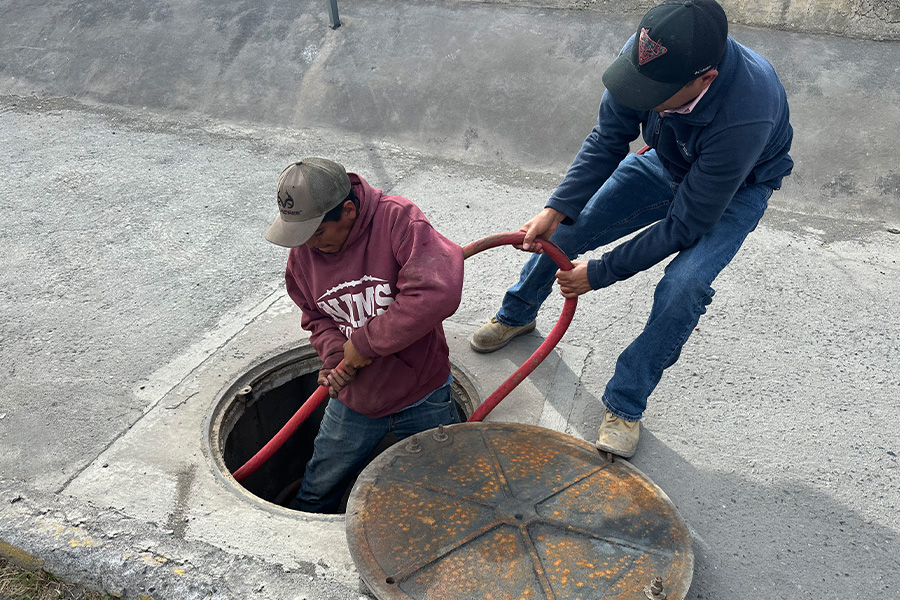
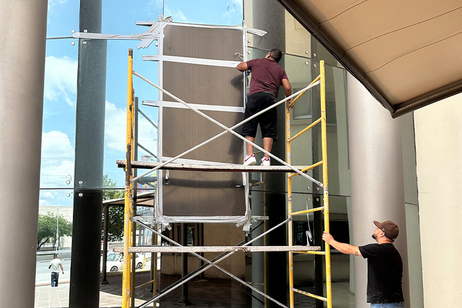
Asimismo, en diversas áreas del Poder Judicial de este Distrito, se llevó a cabo la adquisición e instalación de material eléctrico, consistente en lámparas LED y portalámparas, como parte de las acciones destinadas a mejorar las instalaciones eléctricas, optimizar la iluminación y fortalecer las condiciones operativas de los espacios laborales.
Dimos mantenimiento preventivo y correctivo en plantas eléctricas de emergencia, incluyendo intervenciones mecánicas, cambio de insumos, pruebas técnicas especializadas y suministro de combustible, con el propósito de asegurar la continuidad operativa ante contingencias en el suministro eléctrico.
Realizamos la sustitución de cristales dañados en diversos inmuebles judiciales, con el fin de reforzar la seguridad, proteger las instalaciones de factores ambientales y prevenir actos de vandalismo.
En el Distrito Judicial de Torreón, reparamos e instalamos bombas de agua en el Centro de Justicia Civil y Familiar. Durante este mismo periodo, en todos los distritos judiciales del estado, se llevaron a cabo acciones de mantenimiento y mejora en los sistemas de iluminación, sustituyendo material eléctrico dañado y realizando adecuaciones a las instalaciones, con el propósito de mejorar la seguridad, funcionalidad y eficiencia energética de los inmuebles judiciales.
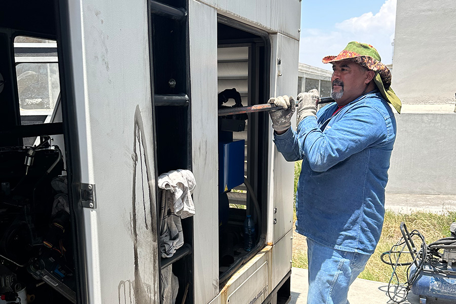
También, realizamos acciones integrales de mantenimiento eléctrico, imagen institucional, seguridad, instalaciones hidrosanitarias e impermeabilización, orientadas a garantizar el correcto funcionamiento, la conservación y la seguridad de los edificios del Poder Judicial.
Las acciones efectuadas durante 2025 contribuyen directamente en la generación de entornos de trabajo adecuados, accesibles y alineados a las exigencias del servicio judicial, impactando de manera positiva en la atención a las personas usuarias y en el desempeño institucional.
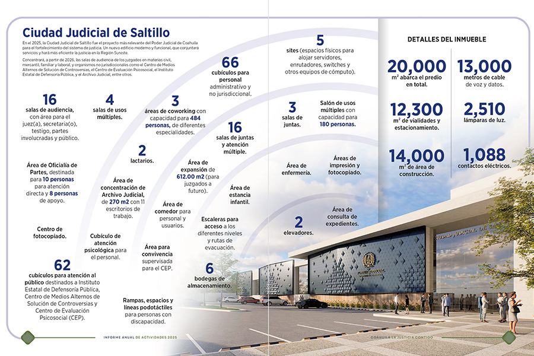